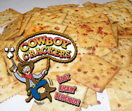

Spicy Cowboy Crackers

Description
These are some super spicy cowboy crackers. Made famous by cracker cowboys.
Ingredients
- Crackers
- Olive Oil
- Red Pepper Flakes
- Black Pepper
- Ranch Powder Packet
Steps
- Pour the olive oil, seasoning mix, red and black peppers into a gallon-size Glad® Zipper bag. Seal the bag and thoroughly mix the ingredients together until well blended.
- Place all of the crackers into the bag, re-seal, and gently turn the bag over several times to coat the crackers with the spice mixture. Be sure to coat as thoroughly as possible.
- Let the bag sit at room temperature overnight.
- When ready to bake, preheat oven to 250°F. Lay the crackers on a baking sheet. Bake for 15 minutes, to seal in the spices and dry slightly. Store in an airtight container.
Home